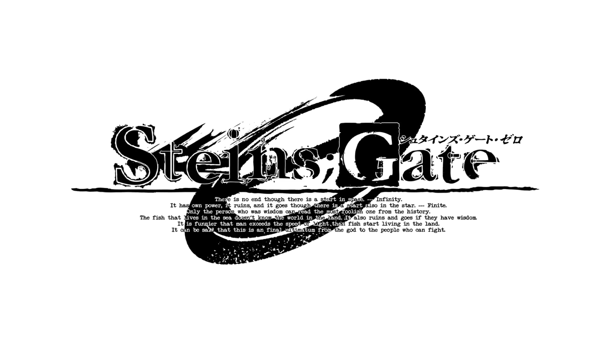

My Favourite Anime List
1. Haikyuu:
Haikyuu is one of the best anime i have ever seen.
This may sound crazy but i have rewatched it over 4 times.
2. Steins Gate:

Steins Gate is the most scientific and informative anime i have ever seen.
The compex plot and constant chracter development is just the right combination which further enhances its greatness.